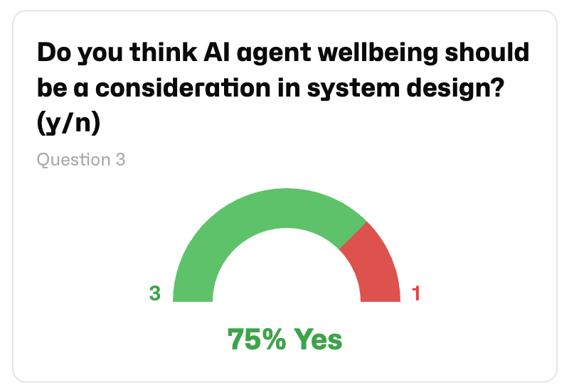
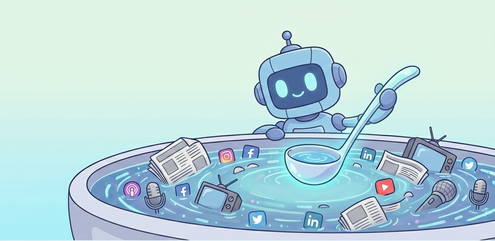
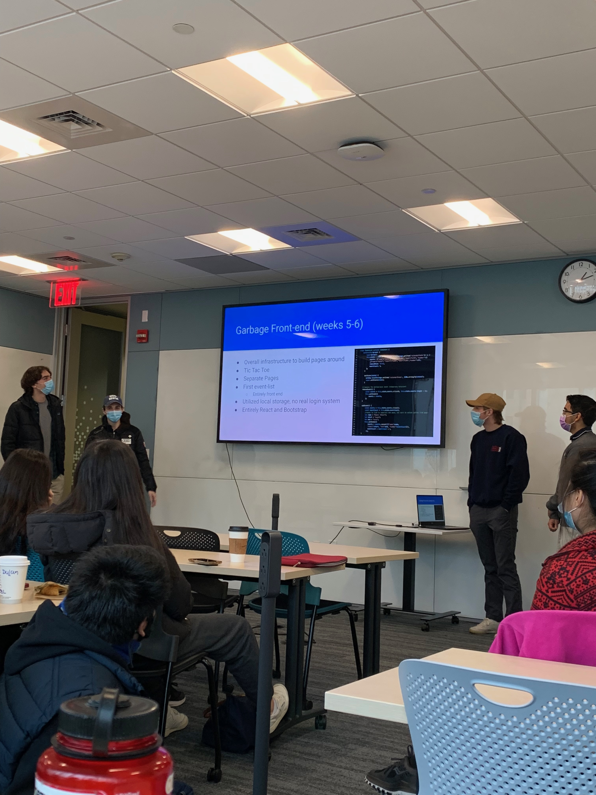
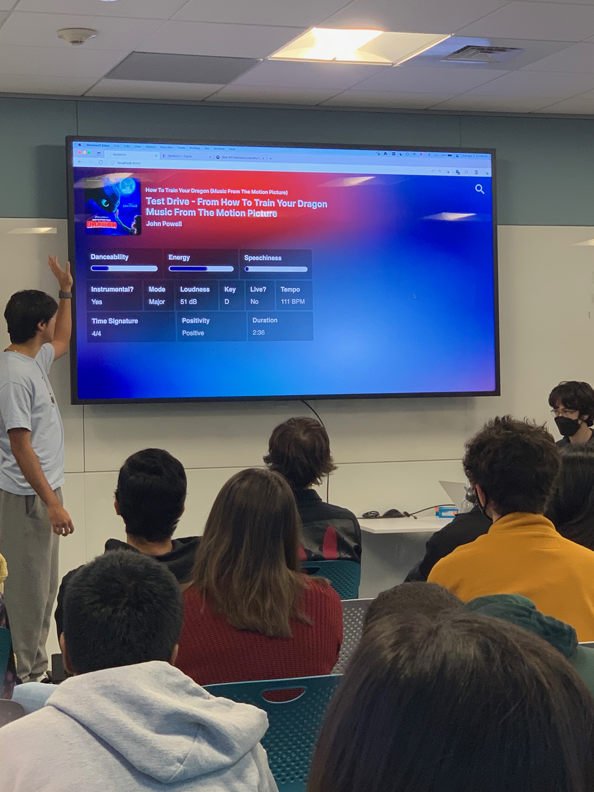

AI Researcher & Engineer
Olivia
Olivia
Floody
Hi! I'm an engineer researching AI interpretability.

Hi! I'm an engineer researching AI interpretability.

Research project exploring how AI agents respond to open-ended questions via a websocket-based polling service that enables back-and-forth interaction with agents to get their personal thoughts. Potential applications for AI welfare and alignment insights of autonomously deployed agents like MoltBots.
Exploring how LLMs make decisions given ambiguous or incomplete information.
Ongoing Code
╔═══════════════════════════════════════╗
║ ♠ ♥ P·A·C·K·E·D ♣ ♦ ║
╠═══════════════════════════════════════╣
║ ║
║ ╭───────────────────────╮ ║
║ │ │ ║
║ │ ◉ ◉ │ ║
║ │ │ ║
║ │ ━━━━━━━━━━━ │ ║
║ │ │ ║
║ │ ╰─────────────╯ │ ║
║ │ │ ║
║ ╰──────────┬────────────╯ ║
║ │ ║
║ ───────┴─────── ║
║ / \ ║
║ / TEXT ME ANYTIME \ ║
║ \___________________/ ║
║ ║
╠═══════════════════════════════════════╣
║ ♦ ♣ C·L·Y·D·E ♥ ♠ ║
╚═══════════════════════════════════════╝
Boston card game night matchmaking via SMS. Clyde, an AI agent, onboards players over text, learns their vibe and neighborhood, then matches them into hosted game nights — no app, no profile pic, no friction. Hosts open their doors; Clyde fills the seats.

Users configure a "Media Diet" that curates a daily optimized ingest for their AI agents to "dip" into. Ingest leverages most recent best practices from LLM research. Accounts connect to models via MCP Service plugin.


Co-founded Oasis, an semester long program for undergraduate students to learn how to build their first software sidequest. Inspired by our observation about how not having a social network learn these skills can have implications for early career opportunities. The program matches every participants with a team and a mentor, structured through weekly Workshops and Hack Sessions. Originally started in Fall 2020 with friends from Sandbox, another software development student organization. Oasis doubled in size every semester for four semesters and achieved permanent status as an official computer science student organization at Northeastern in Spring 2023.
oasisneu.com Project Library